Democracy Guide
The public referenda chamber is one of the three bodies of on-chain governance as it's instantiated in Polkadot and Kusama. The other two bodies are the council and the technical committee.
Public referenda can be proposed and voted on by any token holder in the system as long as they provide a bond. After a proposal is made, others can agree with it by endorsing it and putting up tokens equal to the original bond. During every launch period, the most endorsed proposal will be moved to the public referenda table where it can be voted upon. Voters who are willing to lock up their tokens for a greater duration of time can do so and get their votes amplified. For more details on the governance system please see here.
This guide will instruct token holders how to propose and vote on public referenda using the Democracy module. Below are a few links to stay informed and directly engage with the community.
- Polkadot Direction - a place to discuss governance and the future of Polkadot.
- Kusama Direction - a place to discuss governance and the future of Kusama.
- Polkadot and Kusama Polkassembly - for current referenda, latest proposals, motions, treasury proposals, tips, bounties, and more.
- Polkadot Daily Digest - News about what is happening in the Polkadot ecosystem, published every weekday except holidays.
Important Parameters¶
The important parameters to be aware of when voting using the Democracy module are as follows:
Launch Period - How often new public referenda are launched.
Voting Period - How often votes for referenda are tallied.
Emergency Voting Period - The minimum voting period for a fast-tracked emergency referendum.
Minimum Deposit - The minimum amount to be used as a deposit for a public referendum proposal.
Enactment Period - The minimum period for locking funds and the period between a proposal being approved and enacted.
Cooloff Period - The period in blocks where a proposal may not be re-submitted after being vetoed.
Proposing an Action¶
Proposing an action to be taken requires you to bond some tokens. In order to ensure you have enough tokens to make the minimum deposit, you can check the parameter in the chain state. Navigate to Developer > Chain State > Constants > selected constant query: democracy > minimumDeposit: u128 and then click on the plus button. The bonded tokens will only be released once the proposal is tabled (that is, brought to a vote); there is no way for the user to "revoke" their proposal and get the bond back before it has become a referendum. Since it is essentially impossible to predict definitely when a proposal may become a referendum (if ever), this means that any tokens bonded will be locked for an indeterminate amount of time.
Proposals cannot be revoked by the proposer, even if they never turn into a referendum
It is important to realize that there is no guarantee that DOT you use for proposing or endorsing a proposal will be returned to that account in any given timeframe.
On Polkadot Apps, you can navigate to the Governance -> Democracy tab to make a new proposal. In order to submit a proposal, you will need to submit what's called the preimage hash. The preimage hash is simply the hash of the proposal to be enacted. The easiest way to get the preimage hash is by clicking on the "Submit preimage" button and configuring the action that you are proposing.
The example below demonstrates the creation of a proposal on Kusama (the same procedure applies to
Polkadot). If you wanted to propose that a remark "Expect Chaos!" is added, the preimage hash
would be 0x8ac3f722caf7677254e25ca4ad77d533ca893c7d2ad4009e258d749f2004ef94. You can copy this
preimage hash and save it for the next step. There is no need to click Submit Preimage at this
point, though you could. We'll go over that in the next section.
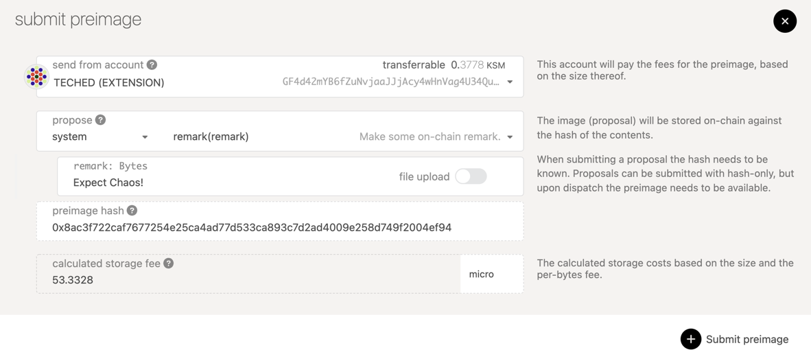
Now you will click on the "Submit proposal" button and enter the preimage hash in the input titled "preimage hash" and at least the minimum deposit into the "locked balance" field. Click on the "Submit proposal" button and confirm the transaction. You should now see your proposal appear in the "proposals" column on the page.
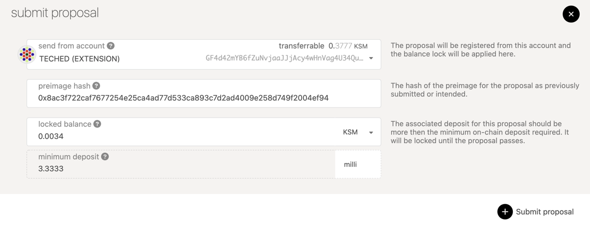
Now your proposal is visible to anyone who accesses the chain and others can endorse it or submit a preimage. However, it's hard to tell what exactly this proposal does since it shows the hash of the action. Other holders will not be able to make a judgement on whether they endorse it or not until someone submits the actual preimage for this proposal. In the next step, you will submit the preimage.
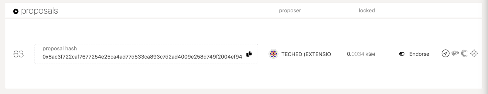
Submitting a Preimage¶
The act of making a proposal is split from submitting the preimage for the proposal since the storage cost of submitting a large preimage could be pretty expensive. Allowing for the preimage submission to come as a separate transaction means that another account could submit the preimage for you if you don't have the funds to do so. It also means that you don't have to pay so many funds right away as you can prove the preimage hash out-of-band.
However, at some point before the proposal passes you will need to submit the preimage or else the proposal cannot be enacted. The guide will now show you how to do this.
Click on the blue "Submit preimage" button and configure it to be the same as what you did before to acquire the preimage hash. This time, instead of copying the hash to another tab, you will follow through and click "Submit preimage" and confirm the transaction.
Once the transaction is included you should see the UI update with the information for your already submitted proposal.
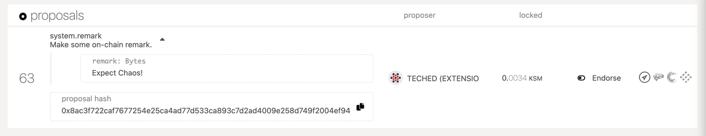
Endorsing a Proposal¶
Endorsing a proposal means that you are agreeing with the proposal and backing it with an equal amount of deposit as was originally locked. The bonded tokens will be released once the proposal is tabled (that is, brought to a vote), just like the original proposer's bond. By endorsing a proposal you will move it higher up the rank of proposals. The most endorsed proposal — in value, not the number of supporters — will be brought to a referendum every launch period.
It is important to note that there is no way to stop or cancel endorsing a proposal once it has been done. Therefore, the DOT that was endorsed will be reserved until the proposal is tabled as a referendum. This is an indeterminate amount of time, since there is no guarantee that a proposal will become a referendum for a given period, as other proposals may be proposed and tabled before it.
Note that it is possible for a single account to endorse a proposal multiple times. This is by design; it is the value, not the number of endorsements per se, that counts in terms of weighting. If there were a limit of one endorsement per account, it would be trivial for a user with, for example, 1000 DOT to create ten accounts with 100 DOT instead of a single account with 1000 DOT. Thus, no restrictions are made on the number of times a single account can endorse a proposal.
To endorse a proposal, navigate to the proposal you want to endorse and click on the "Endorse" button.
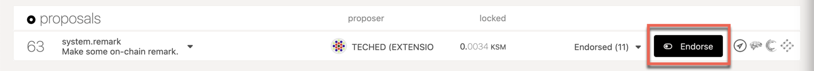
You will be prompted with the full details of the proposal (if the preimage has been submitted!) and can then broadcast the transaction by clicking the blue "Endorse" button.
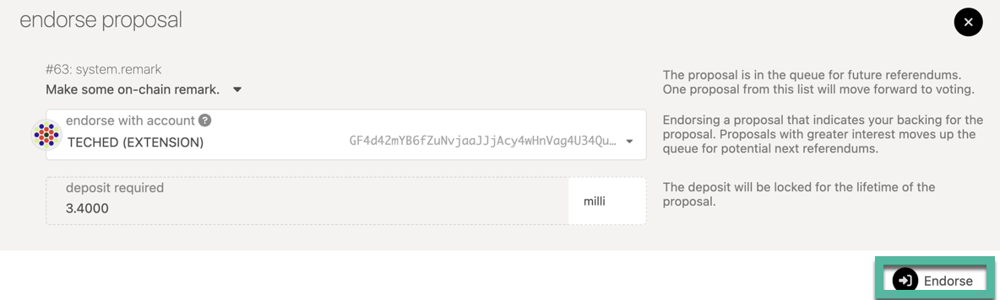
Once successful, you will see your endorsement appear in the dropdown in the proposal details.
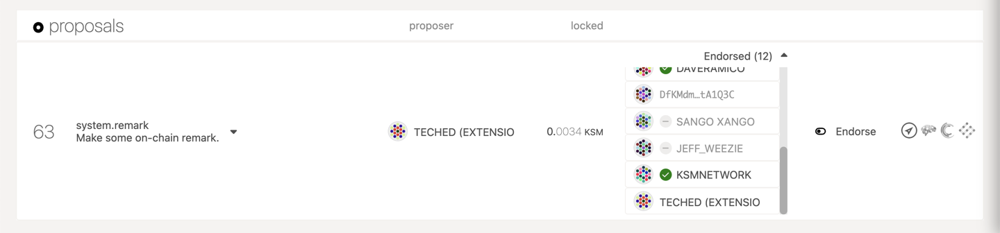
Voting on a Proposal¶
At the end of each launch period, the most endorsed proposal will move to a referendum. During this time you can cast a vote for or against the proposal. You may also lock up your tokens for a greater length of time to weigh your vote more strongly. During the time your tokens are locked, you are unable to transfer them, however they can still be used for further votes. Locks are layered on top of each other, so an eight-week lock does not become a 15-week lock if you vote again a week later, rather another eight-week lock is placed to extend the lock just one extra week.
To vote on a referendum, navigate to the "Democracy" tab of Polkadot Apps. Any active referendum will show in the "referenda" column. Click the blue button "Vote" to cast a vote for the referendum.
If you would like to cast your vote for the proposal select the "Aye, I approve" option. If you would like to cast your vote against the proposal in the referendum you will select "Nay, I do not approve" option.
The endorsement option is to select your conviction for this vote. The longer you are willing to lock your tokens, the stronger your vote will be weighted. The timeline for the conviction starts after the voting period ends; tokens used for voting will always be locked until the end of the voting period, no matter what conviction you vote with. Unwillingness to lock your tokens means that your vote only counts for 10% of the tokens that you hold, while the maximum lock-up of 896 days means you can make your vote count for 600% of the tokens that you hold. It is possible to vote with tokens already locked by staking.
When you are comfortable with the decision you have made, click the blue "Vote" button to submit your transaction and wait for it to be included in a block.
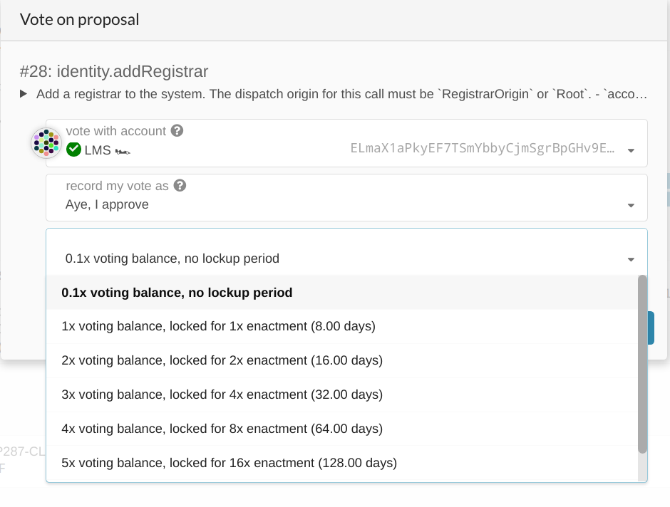
Unlocking Locked Tokens¶
The tokens that are locked in democracy are unlocked lazily. This means that you, the user, must explicitly call an unlock extrinsic to make your funds available again after the lock expires. Unbonding is another term you hear a lot in Polkadot, it means withdrawing your DOT that was used in staking. To know more about it, please see here.
You can do this from the "Accounts" page in Polkadot-JS Apps, unless you use Ledger (see below). First, check that your account has a "democracy" lock by opening the details on your balance. In the example below the account has 150 KSM locked in democracy.
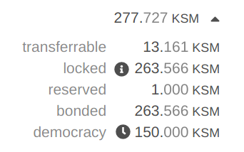
Now you can click the menu button (the three dots) and find the option that says "Clear expired democracy locks". After selecting this option you may confirm the transaction and your locks will be cleared when successful.
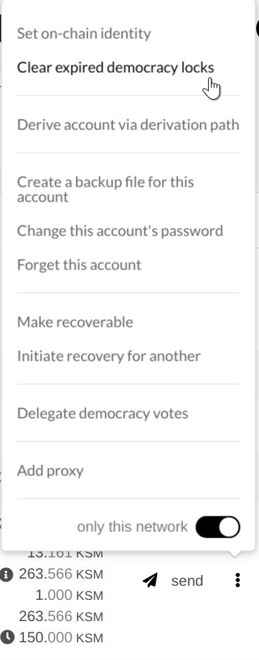
With a Ledger hardware wallet or Unlocking Very Old Locks¶
If you do not see an option to clear expired democracy votes, it may be that the lock is very old. Or, if you are using the Ledger hardware wallet, you will not be able to issue the batch Unlock action from the UI.
Instead, you must clear the lock by directly issuing the correct extrinsics.
Navigate to the Extrinsics page and submit the
following extrinsic: democracy.removeVote(index) using the account that you voted with. For the
index number (ReferendumIndex), enter the number of the referendum for which you voted ("12" in the
image below).
The number of the referendum for which you voted is visible in an explorer such as Subscan.
You need to press the "Submit Transaction" button to submit the extrinsic.
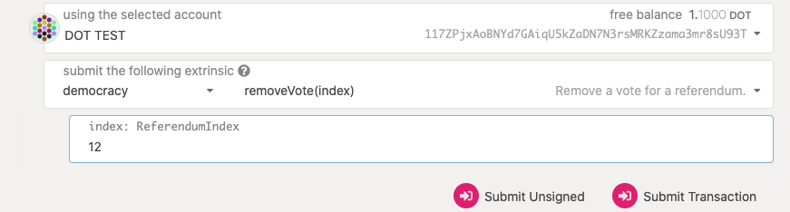
Now submit the following extrinsic: `democracy.unlock(target), where the target is your account address.
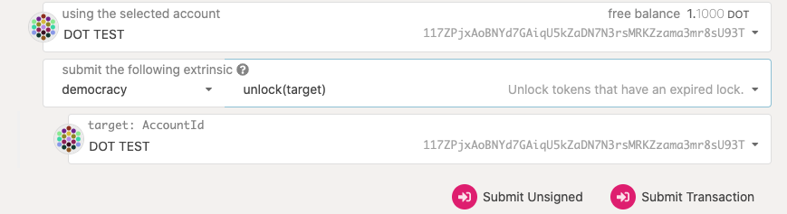
If you return to the Accounts page, you should see that the democracy lock has been released.
Note that this applies only to locked DOT that were used for voting on referenda. In order to unlock DOT locked by voting for members of the Polkadot Council, you need to go to the Council page, click "Vote", and then click on "Unvote All".
Delegate a Vote¶
If you are too busy to keep up and vote on upcoming referenda, there is an option to delegate your vote to another account whose opinion you trust. When you delegate to another account, that account gets the added voting power of your tokens along with the conviction that you set. The conviction for delegation works just like the conviction for regular voting, except your tokens may be locked longer than they would normally since locking resets when you undelegate your vote.
The account that is being delegated to does not make any special action once the delegation is in place. They can continue to vote on referenda how they see fit. The difference is now when the Democracy system tallies votes, the delegated tokens now are added to whatever vote the delegatee has made.
You can delegate your vote to another account and even attach a "Conviction" to the delegation. Navigate to the "Accounts" tab on Polkadot-JS UI and click on the three vertical dots and select "Delegate democracy votes" option for the account of your choice. Then you would be presented with a pop-up window which lets you enter the account details of the delegated account, delegated amount and conviction. You can enter the relevant details and click on the delegate button and then sign and submit the transaction.
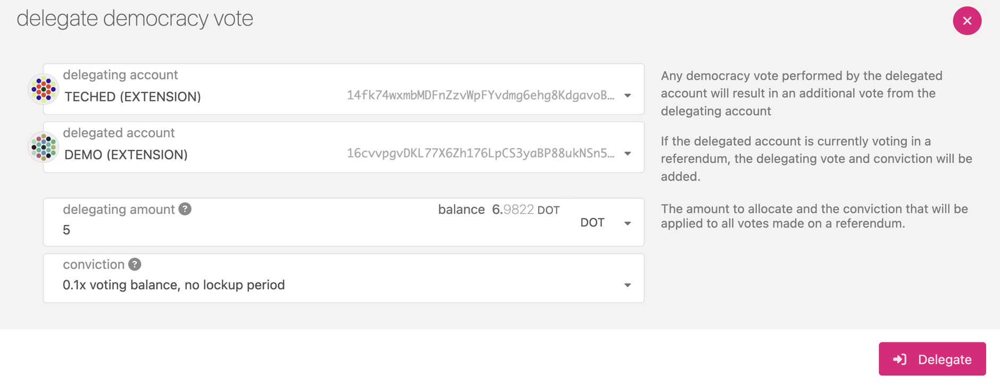
Your delegation will count toward whatever account you delegated for votes on until you explicitly undelegate your vote.
Query the chain state for an account's delegation preferences
It is possible to query the delegation preferences of any actively delegating account on the network
through democracy.votingOf extrinsic.
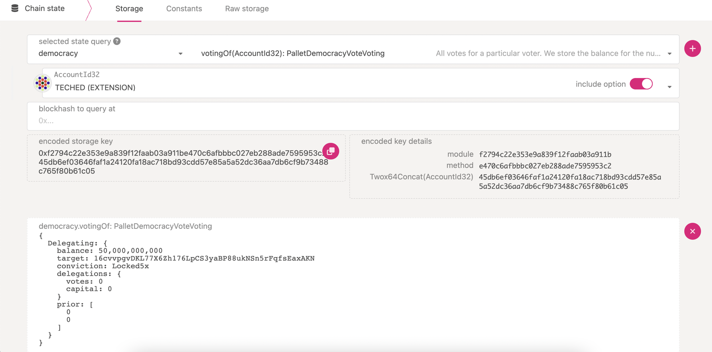
Undelegate a Vote¶
Caution
If there is an existing lock due to a previous delegation change or undelegation, any new change or undelegation will restart the lock period for the larger DOT amount and the longest conviction period between the existing and the new lock.
This will only matter to accounts with conviction, as the accounts with no conviction don't have any lock period.
Examples:
-
Delegate 500 DOT with 1x conviction, then change delegation to 1000 DOT with 1x conviction, the lock period will reset for 1000 DOT with 1x conviction.
-
Delegate 500 DOT with 3x conviction, then change the delegation to 1000 DOT with 1x conviction, the lock period will reset for 1000 DOT with 3x conviction.
-
Delegate 500 DOT with 1x conviction, then change the delegation to 200 DOT with 1x conviction, the lock period will reset for 500 DOT with 1x conviction.
To understand this in further detail checkout this stackexchange post.
You may decide at some point in the future to remove your delegation to a target account. In this
case, your tokens will be locked for the maximum amount of time in accordance with the conviction
you set at the beginning of the delegation. For example, if you chose "2x" delegation for four weeks
of lock-up time, your tokens will be locked for 4 weeks after sending the undelegate transaction.
Once your vote has been undelegated, you are in control of making votes with it once again. You can
start to vote directly, or choose a different account to act as your delegate.
The undelegate transaction must be sent from the account that you wish to clear of its delegation.
For example, if Alice has delegated her tokens to Bob, Alice would need to be the one to call the
undelegate transaction to clear her delegation.
The easiest way to do this is from the "Accounts" tab on Polkadot-JS UI where you can manage the delegation of your account.
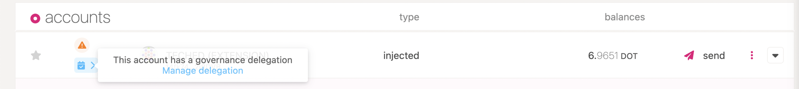
When you click on "manage delegation", you would be presented with a pre-populated pop-up window with that account's delegation preferences. Here, you have an option to undelegate or save the modifications made to the account's delegation preferences.
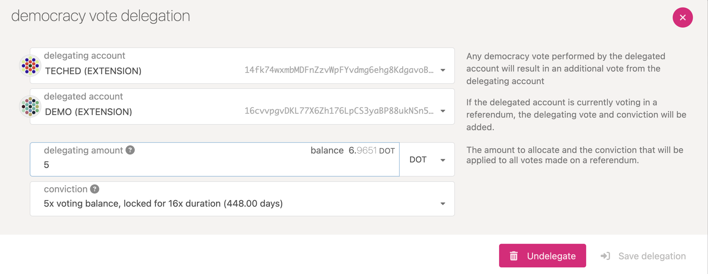
Voting with a Governance Proxy¶
Making a vote on behalf of a stash requires a "proxy" transaction from the Proxy pallet. When you choose this transaction from the "Extrinsics" tab, it will let you select "vote" from the Democracy pallet, and you will specify the index of the referendum that is being voted, the judgement (i.e. "Aye" for approval or "Nay" for rejection), and the conviction, just like a normal vote.
For more material on adding and removing Governance proxies, as well as other types, please see the Proxy page.